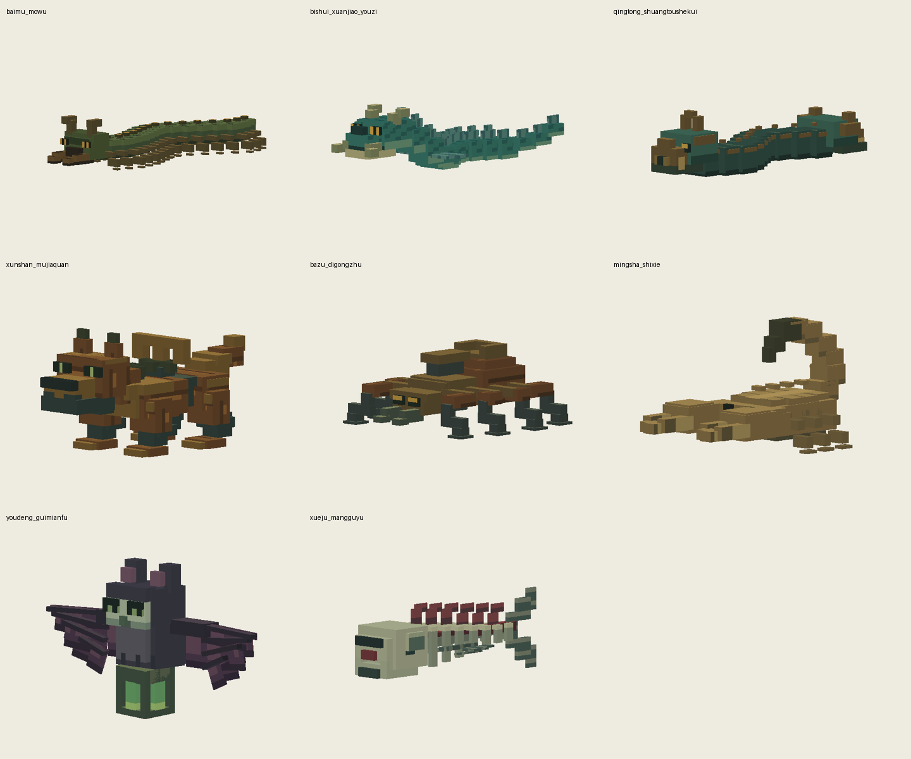
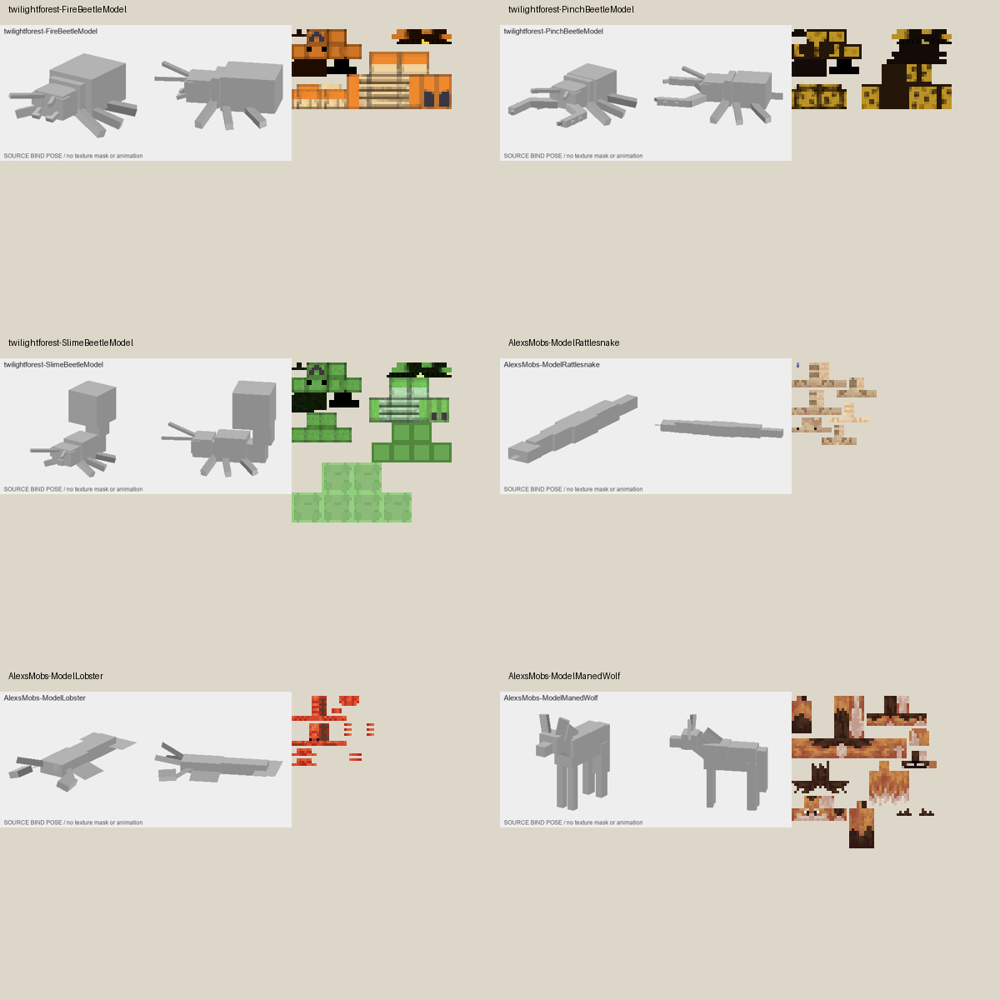

八只剩余生物：模型＋贴图
已上传V35精英资源逐文件核对，保持不变。既有骨架、动画字节、技能和碰撞未改。

- 百目魔蜈：收薄腹侧板、足端和口钳，背眼重新贴合甲壳；背甲与腹面分区，足根用角质色。参考甲虫的主体/足根主次与Alex洞穴蜈蚣甲节。
- 碧水玄蛟幼崽：延长相邻躯段的重叠，收薄鳍根和尖牙；青鳞、浅腹与角须分开。参考Alex响尾蛇的躯干递减与背腹连续纹样。
- 青铜双头蛇傀：减少每节厚金边与突起，保留双首机关；青铜壳、暗连接和喷口分明，金色不再盖住脸。借鉴蛇类连续躯段，不把机关改成活蛇。
- 巡山木甲犬：减薄肩臀盖板与脚掌，保留发条和机械关节；沿木构件长轴绘纹，铁轴与铜箍分离。参考Alex鬃狼口鼻、躯干与四肢的识别关系。
- 八足地工蛛：减薄足端与外扩盖板，腿的粗细有主次；木腹、铜前躯、铁关节与夹口分材质。参考暮色甲虫大腹/小头/细足结构。
- 鸣沙石蝎：收薄螯尖、足端和重复背甲边，保留尾针；背脊、腹面和夹击内面分层。参考Alex龙虾的螯与细足比例。
- 幽灯鬼面蝠：减薄翼膜与翼骨，收小面部凸起；暗紫翼膜、灰毛、浅面具与绿灯分开。参考Alex蜜袋鼯薄膜和身体大块色区，保留鬼面蝠身份。
- 穴居盲骨鱼：用真实开放肋架替换实心暗块，收薄鳍；骨面、骨缝、残肉与鳍膜分区。参考Alex Skelewag骨架与薄鳍的分离关系。
检查：真实PNG尺寸/逐面UV/编辑源/动作循环/每0.25tick离地边界。参考研究尚未达到1000个，未把重复换皮计入。
实际查看的模型与原始贴图
参考模型源的灰色结构与原始PNG成对查看；下图不是对方游戏实拍，不冒充完整贴图渲染。外部像素没有用于Dynasty资源。

暮色森林官方源码 · Alex’s Mobs官方源码